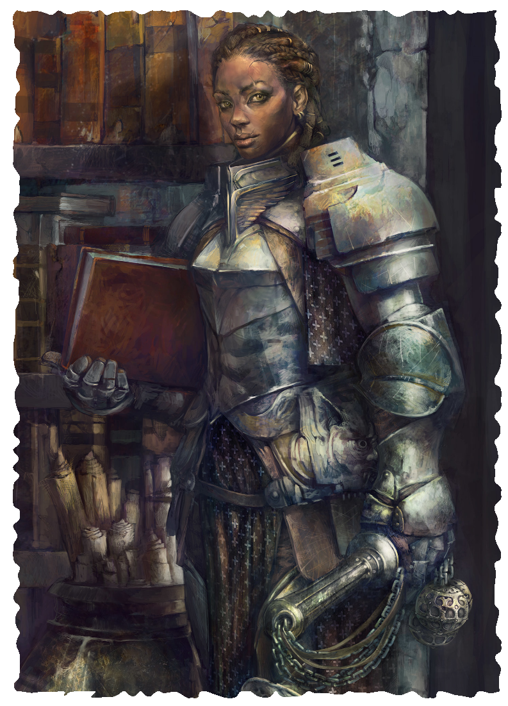

PRIEST
Priests derive magical power from pledging service to a cause or supernatural being. Service gives priests purpose in the world and devotion gives them the ability to work magic.
Discovering a tradition is a spiritual experience for priests. They encounter a powerful presence during their travels, feel some sacred presence enter them while studying a text, or have a dream in which they are chosen to inherit great power. The initial experience sets these individuals on the priest’s path and gives them the power they need to further their righteous cause.
Oath stands at the center of priests’ identities. It shapes their behavior, gives them purpose, and reveals their traditions. Priests committed to the Gods use different kinds of magic from those who serve the late Emperor.
LEVEL 1 PRIEST
Attributes Increase two by 1
Characteristics Health +4, Power +1
Languages and Professions You either add a language you speak or learn to read a language you already speak. Also, add one profession.
Oath Priests derive power from an oath made to a cause or to a higher being. Your oath has three associated traditions, determined by the nature of your cause. Whenever you discover a tradition as a priest, you may only discover one of these three. See Oath Examples below, or work with your GM to decide what traditions fit your oath. See Gods for more information about the beliefs in this realm.
Magic You discover one tradition associated with your oath. Then make two choices. For each choice, either discover a tradition associated with your oath or learn one spell from a tradition you have discovered. See Spellcasting for more information
Shared Recovery You can use an action to heal damage equal to your healing rate. Then, choose one creature other than you that is within short range. The target also heals damage equal to its healing rate. Once you use this talent, you cannot use it again until after you complete a rest.
LEVEL 2 PRIEST
Characteristics Health +4
Magic You make two choices. For each choice, you either discover a tradition associated with your oath or you learn one spell from a tradition you have discovered.
Prayer When a creature within short range of you makes an attack roll or challenge roll, you can use a triggered action to grant 1 boon on the triggering roll.
LEVEL 5 EXPERT PRIEST
Characteristics Health +4, Power +1
Magic Learn one spell.
Imbued Strike When you use Prayer to grant a creature 1 boon on an attack roll, the attack deals 1d6 extra damage.
LEVEL 8 MASTER PRIEST
Characteristics Health +4
Magic You discover a tradition or learn one spell.
Inspiring Prayer When you use Prayer on a creature other than yourself, you make attack rolls and challenge rolls with 1 boon for 1 round.
Improved Shared Recovery You can use Shared Recovery twice.
| Oath | Associated Traditions |
|---|---|
| Cult of Amaat | Celestial, Life, Theurgy |
| Demon God Revel | Curse, Enchantment, Spiritualism |
| Dragon Ancestors | Fire, Metal, Rune |
| Imperial | Arcana, Order, Protection |
| Jotunn Faith | Battle, Earth, Song |
| Moon Goddess Illune | Shadow, Teleportation, Water |